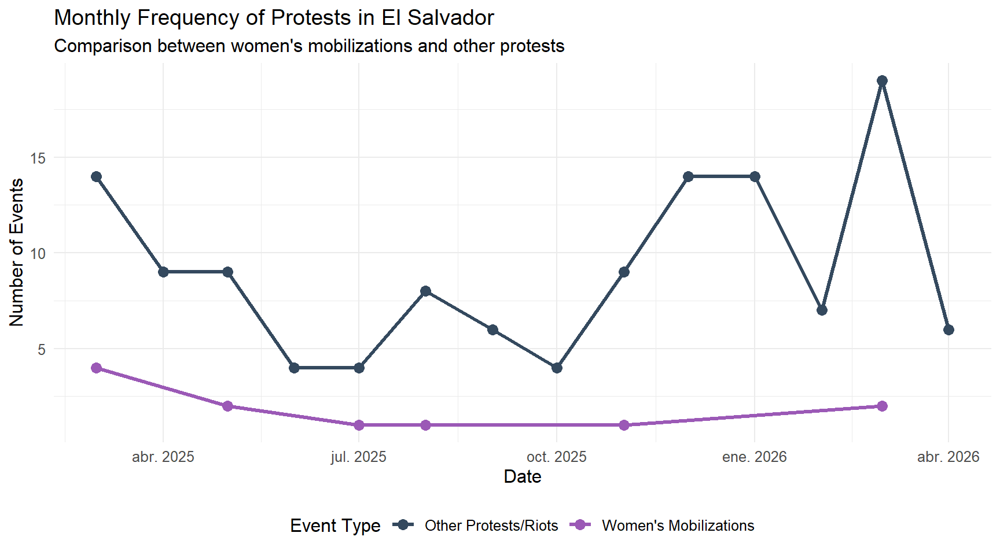
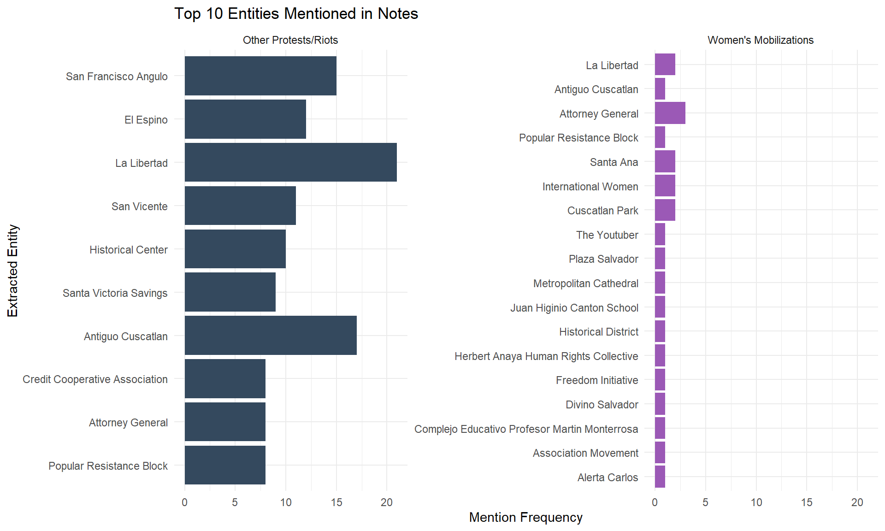
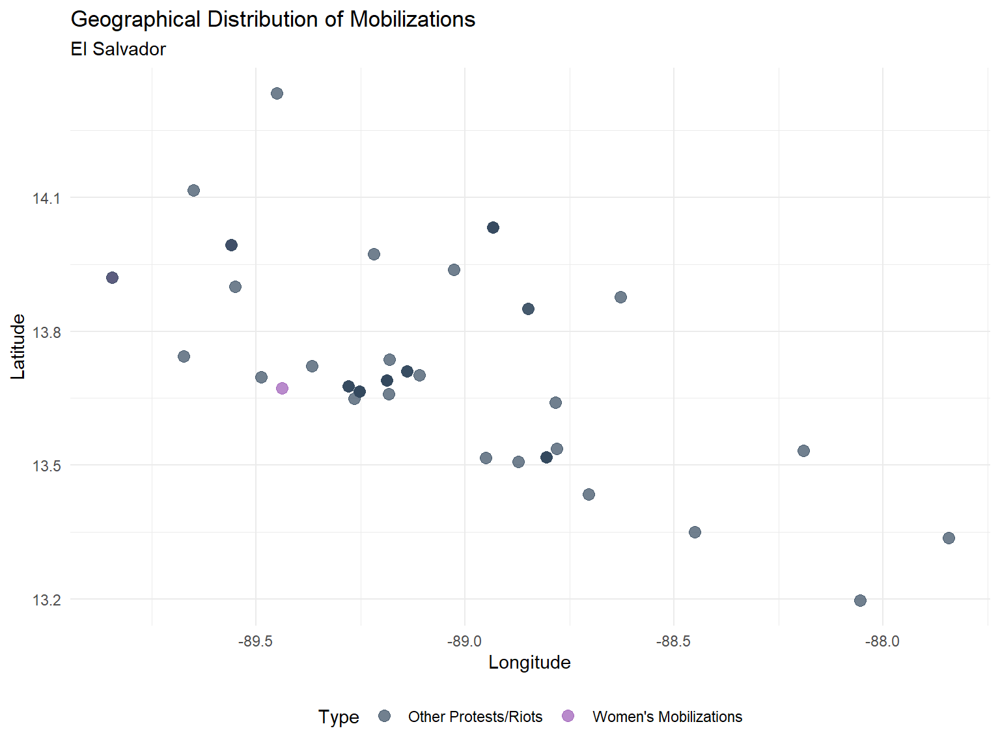

Focus on women’s mobilizations and other protests (ACLED)
Author
Automated Analysis
1. Introduction
This document processes and visualizes conflict and protest data in El Salvador, using the ACLED database as the primary source. The main focus is to distinguish women-related mobilizations from other general protests and riots in the country.
Show R code
# Load necessary librarieslibrary(tidyverse)library(lubridate)library(ggplot2)# Configure file path# Path originally provided with the ACLED databasedata_path <-"E:/GFW_New_Analysis/AllCountries2025-6.csv"# Load the database# We use read_csv as it is fast and efficientacled_data <-read_csv(data_path)# Filter by El Salvador and process datessv_data <- acled_data %>%filter(country =="El Salvador") %>%mutate(# ACLED normally brings an 'event_date' in dmy or ymd format, we handle both common casesevent_date =as_date(parse_date_time(event_date, orders =c("dmy", "ymd"))) )
2. Filtering Methodology
To find the mobilizations, we created a classification by searching for key terms associated with women in the notes and actor columns. If it is not related to women, we check if it is a regular protest or riot.
Show R code
# Keywords for women's mobilizationskeywords <-c("woman", "women", "female", "girl", "girls","gender", "feminism", "feminist","pregnancy", "abortion","rape", "sexual violence", "domestic violence","gender-based violence", "gbv","femicide", "women's rights","mujeres", "mujer", "niñas", "feminista")pattern <-paste(keywords, collapse ="|")sv_data <- sv_data %>%mutate(# Search for patterns in lowercase across different columnsis_women =str_detect(tolower(notes), pattern) |str_detect(tolower(actor1), pattern) |str_detect(tolower(assoc_actor_1), pattern) |str_detect(tolower(actor2), pattern) |str_detect(tolower(assoc_actor_2), pattern),# Fill null valuesis_women =replace_na(is_women, FALSE),# Create final categorymobilization_type =case_when( is_women ~"Women's Mobilizations", event_type %in%c("Protests", "Riots") ~"Other Protests/Riots",TRUE~"Other ACLED Events" ) )# Keep only the mobilizations/protests for the main analysisprotests_data <- sv_data %>%filter(mobilization_type %in%c("Women's Mobilizations", "Other Protests/Riots"))cat("Total Women's events:", sum(protests_data$mobilization_type =="Women's Mobilizations"), "\n")
Total Women's events: 11
Show R code
cat("Total Other Protests:", sum(protests_data$mobilization_type =="Other Protests/Riots"), "\n")
Total Other Protests: 127
3. Visualizations and Results
3.1. Temporal Evolution
We observe how protests have behaved over time to identify mobilization peaks.
Show R code
protests_data %>%mutate(month_year =floor_date(event_date, "month")) %>%count(month_year, mobilization_type) %>%ggplot(aes(x = month_year, y = n, color = mobilization_type, group = mobilization_type)) +geom_line(size =1.2) +geom_point(size =3) +scale_color_manual(values =c("Women's Mobilizations"="#9b59b6", "Other Protests/Riots"="#34495e")) +theme_minimal() +labs(title ="Monthly Frequency of Protests in El Salvador",subtitle ="Comparison between women's mobilizations and other protests",x ="Date",y ="Number of Events",color ="Event Type" ) +theme(legend.position ="bottom",text =element_text(size =12))

Evolution of mobilizations over time
3.2. Entities Mentioned in Notes
We extract capitalized phrases from the notes column to identify key entities, organizations, or actors mentioned in a narrative way.
Show R code
library(stringr)protests_data %>%mutate(# Extract sequences of 2 or more capitalized words as an approximation to entitiesentities =str_extract_all(notes, "\\b[A-Z][a-z]+(?:\\s+[A-Z][a-z]+)+\\b") ) %>%unnest(entities) %>%# Clean false positives (generic English terms that usually start sentences in ACLED)filter(!entities %in%c("El Salvador", "San Salvador", "In El", "At Least", "The National", "Members Of", "A Group", "Police Forces", "The Fmln", "National Civil", "Civil Police", "Armed Forces", "National Civil Police")) %>%count(entities, mobilization_type, sort =TRUE) %>%group_by(mobilization_type) %>%top_n(10, n) %>%ungroup() %>%ggplot(aes(x =reorder(entities, n), y = n, fill = mobilization_type)) +geom_col(show.legend =FALSE) +coord_flip() +facet_wrap(~mobilization_type, scales ="free_y") +scale_fill_manual(values =c("Women's Mobilizations"="#9b59b6", "Other Protests/Riots"="#34495e")) +theme_minimal() +labs(title ="Top 10 Entities Mentioned in Notes",x ="Extracted Entity",y ="Mention Frequency" )

Top Entities Extracted from Notes
3.3. Basic Geographical Distribution
Using the coordinates provided in ACLED, we can map the location of the incidents.
Show R code
# Dot plot using latitude and longitudeggplot(protests_data, aes(x = longitude, y = latitude, color = mobilization_type)) +geom_point(alpha =0.7, size =3) +scale_color_manual(values =c("Women's Mobilizations"="#9b59b6", "Other Protests/Riots"="#34495e")) +theme_minimal() +labs(title ="Geographical Distribution of Mobilizations",subtitle ="El Salvador",x ="Longitude",y ="Latitude",color ="Type" ) +theme(legend.position ="bottom")

Geographical distribution of events
4. Conclusions
This quick exploratory analysis allows us to observe that mobilization dynamics in El Salvador have distinct peaks depending on whether the agenda is related to women’s issues or general conflicts. The organizations involved (actors) also vary significantly.